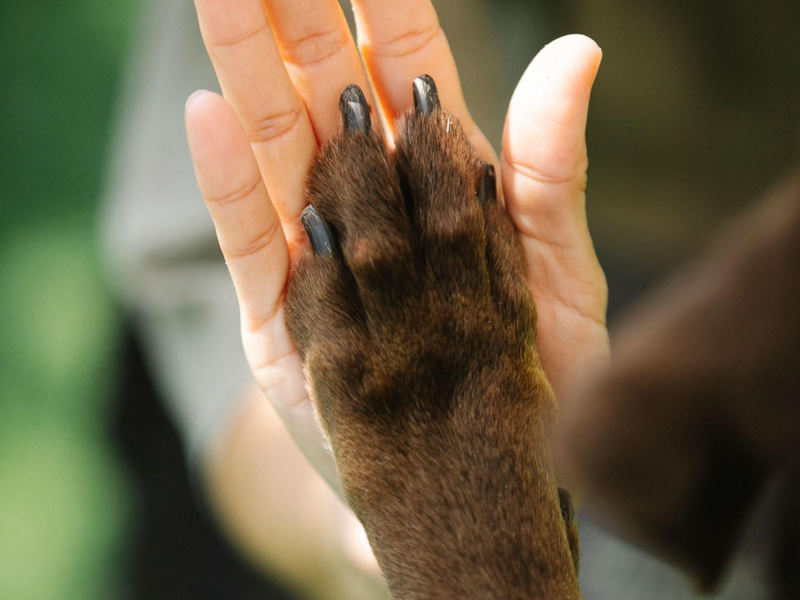
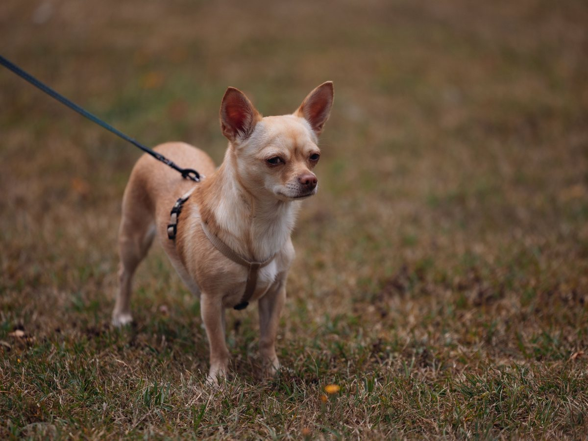
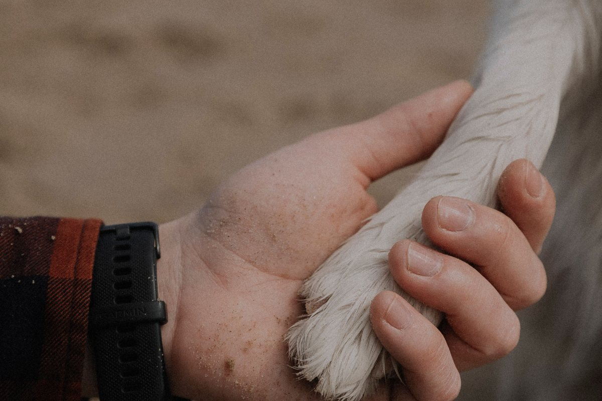
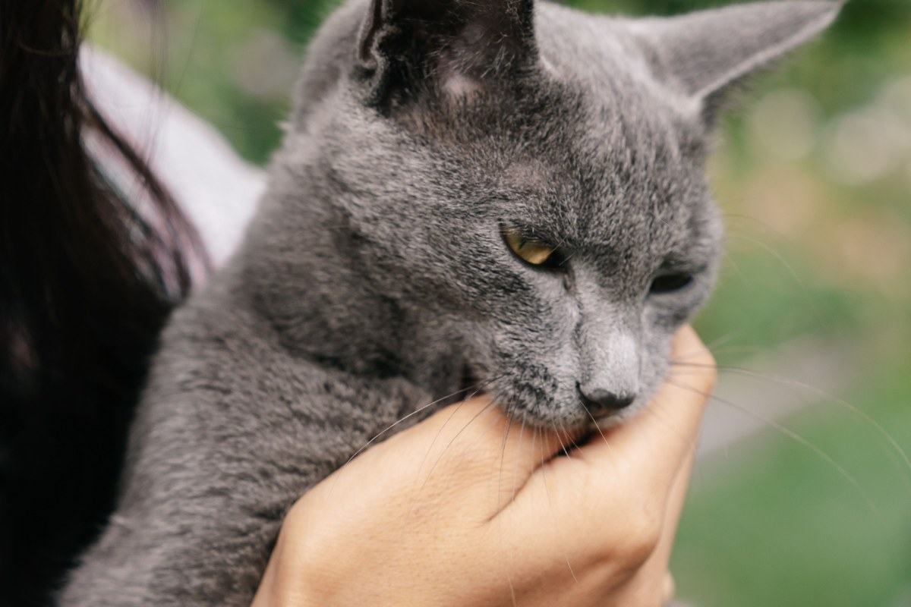

Puente Alto · Av. Gabriela 1570
¿Espero o voy?
Provet: 228 reseñas y abierto todos los días, de 10 a 20. Antes de salir, llama.
- 228reseñas en Google
- 7días a la semana, domingo incluido
- 10horas al día: de 10 a 20
- 0webs: provet.cl es de un laboratorio de fármacos y está caído
¿Espero o voy?
Una decisión, con el teléfono a mano
-
No espera
Llama y sal
- Le cuesta respirar.
- Sangra y no para.
- Un golpe fuerte o un atropello.
- No puede orinar.
- Comió algo que no debía.
- Convulsiona.
-
Puede esperar
Llama y pregunta
- Vomitó una vez y sigue animado.
- Cojea, pero apoya la pata.
- Hoy no quiso comer.
- Se rasca más de lo normal.
-
Por teléfono
Sin moverte
- Si hay hora hoy.
- Si atienden a tu especie.
- Qué llevar a la consulta.
Todos los días, de 10 a 20.
Guía general: no reemplaza al veterinario. Fuera de horario, pregunta hoy a qué urgencia derivan.
A las nueve de la noche, la duda pesa más.
La clínica
De barrio, en Av. Gabriela
-
Horario
Todos los días
De 10 a 20, domingo incluido.
-
Teléfono
Llama antes de salir
Fijo: (2) 2966 0339.
-

Consulta
Perros y gatos
Con hora o llamando antes.
-

Reseñas
El diagnóstico
Uno de los temas que más se repiten.
-
Después
El descanso en casa
Pregunta qué observar.
-
De noche
Fuera de horario
Pregunta hoy a dónde derivan.
Horario, teléfono y temas de reseñas son de su ficha; los servicios, de ejemplo.
Antes de salir, llama.
El único consejo de esta página
La espera
Relojes, mantas y teléfonos


Fotos de referencia: ninguna es de la clínica.
Dónde está
Av. Gabriela 1570, Puente Alto
- Teléfono
- (2) 2966 0339
- Todos los días
- 10:00–20:00
- De noche
- Cerrado
- Sitio web
- No tiene
En Av. Gabriela hay varias veterinarias: la de Provet es el 1570.
Av. Gabriela 1570 Abrir en Google Maps
Para Provet
Qué es real y qué falta
Lo verificado
Dirección, teléfono, horario de todos los días y los temas de sus reseñas, al 14-09-2026.
Lo de ejemplo
La guía de «¿Espero o voy?», los servicios y las fotos.
Lo que falta
Una web que diga el horario: una reseña llegó de noche creyendo que atendían 24 horas, y provet.cl es de otra empresa.